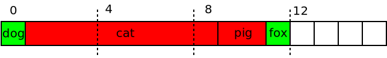

Alignment¶
Data Alignment¶
Data alignment: processors like data items of size N (a power of two) to exist at base addresses that are a multiple of N
⟶ “Natural alignment”
A character can exist at any address (no alignment restriction)
A 16 bit integer (
shorton most/all architectures) must align to a 2 byte boundarySame with 32 bit and 64 bit integers,
floatanddoublePointers on a 32 bit architecture must align to a 4 byte boundary
Pointers on a 64 bit architecture must align to a 8 byte boundary

Data Alignment, Compilers¶
Compilers generally know about a machine’s data sizes and alignment requirements
Variables are placed at addresses that align them naturally
Not normally a problem during development
Except …
Mixing 32 bit and 64 bit code (e.g. running a 32 bit executable on a 64 bit OS) ⟶ different pointer sizes, at least
Reading and interpreting binary data from somewhere
Unaligned Data Access (1)¶

Split in two memory accesses, combined by arithmetic (shift, bitwise OR)
Architecture dependent
Done in hardware
Trap into OS, emulation in software
Either way: non-negligible performance penalty
⟶ Play by the rules and just don’t do it
How can I produce an unaligned access?
Unaligned Data Access (2)¶
The following code is not clean
Works only because all is done to make unaligned access work
This is not guaranteed!
An OS is perfectly allowed to crash the offending program (not generally done though)
char dog[10];
char *p = dog+1;
unsigned long l = *(unsigned long *)p; // <-- unaligned access
Future proof (but no faster) …
char dog[10];
unsigned long l;
memcpy(&l, dog+1, sizeof(unsigned long));
Padding (1)¶
What happens to structure members?
No standalone variables which are freely allocated by the compiler
Compiler is forbidden (per C/C++ standard) to rearrange members of a
struct
struct animals {
char dog; /* 1 byte */
unsigned long cat; /* 8 bytes */
unsigned short pig; /* 2 bytes */
char fox; /* 1 byte */
};
How large would this be? 1+8+2+1 == 12?
Padding (2)¶
Quite naive structure layout: alert{no compiler does this!}
Can be enforced by compiler specific structure attributes (GCC) or pragmas (Doze) $to$ textit{Bogus!}
Padding (3)¶
Compiler inserts padding
Preserves order of members (dictated by law)
Artificially guarantees aligned access
struct animals {
char dog; /* 1 byte */
char __pad0[7]; /* 7 bytes */
unsigned long cat; /* 8 bytes */
unsigned short pig; /* 2 bytes */
char fox; /* 1 byte */
char __pad1[5]; /* 5 bytes (?) */
};

Padding (4)¶
Bloat in size
⟶ Rearrange members manually, ordered by decreasing size/alignment
struct animals {
unsigned long cat; /* 8 bytes */
unsigned short pig; /* 2 bytes */
char dog; /* 1 byte */
char fox; /* 1 byte */
};
Structure Alignment (1)¶
What is the alignment of a structure?
Padding is applied inside a structure, to meet alignment requirements of all members
On what addresses can a structure exist, then?
⟶ On all addresses where the member with the largest alignment can exist
Rule: The alignment of a structure is the alignment of the largest included type.
Corollary: The alignment of a union is the alignment of the largest included type
Structure Alignment (2)¶
Remember?
Largest member is
cat, 8 bytes ⟶ structure’s alignment is 8If we place the entire structure at address 8,
catis at 16 - which aligns it correctly
So, remember:
The alignment of a structure is the alignment of the largest included type.
The alignment of a union is the alignment of the largest included type.
And Arrays? (1)¶
Correctly Aligned
There is a padding of 5 bytes at the end of the structure
If we omit it, the alignment is not changed - only the structure becomes smaller in size (19 bytes, which is not only odd but prime)
Bogus, no padding at end

And Arrays? (2)¶
Prime-Aligned Structure
This structure is clearly not suited for arrays
Nearly all members of the second array element would be misaligned
Would it suffice to end-pad the structure so its entire size is a multiple of 4?
And Arrays? (3)¶
Would it suffice to end-pad the structure so its entire size is a multiple of 4 (and not 8)?
⟶ No: the
catmember of the second array element would then be misaligned
So, remember:
The size of a structure is a multiple of the alignment of the largest included type.
The alignment of an array is the alignment of its base type.